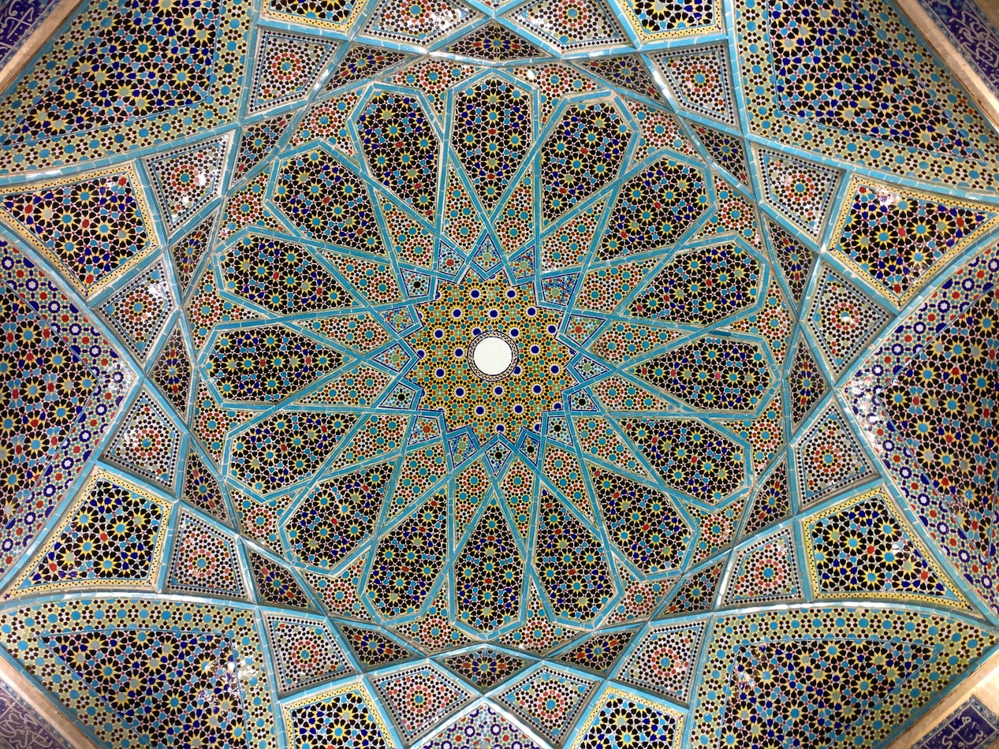

화성 진행의 기본 법칙은 무엇보다, 조형 예술에서의 원(圓)처럼, 가장 중요한 발전의 맹아를 내포하고 있는 것으로, 그것으로 다양한 음악적 관계를 설명할 수 있다 (유감스럽게도 거의 설명되지 않고 있지만).
모든 음악적 요소들은 자연법칙에 기초하여 서로 은밀하게 결합되고 친화성을 갖게 된다.  아라베스크나 신전의 기둥처럼 혹은 나뭇잎이나 꽃과 같은 자연미의 산물처럼 그 자체로 우리 마음에 드는 것이다. 하나의 음계가 여러 다른 손을 거치면서 베토벤의 서곡이 되기도 하고 베르디의 서곡이 되기도 한다. 이 둘의 차이는 무엇인가? 혹시 이중 하나가 더 깊은 감정을 표현한다는 것일까, 아니면 이중 하나가 동일한 감정을 더 풍부하게 표현한다는 것일까? 아니다. 그것이 아니라 하나가 다른 것에 비해 더 아름다운 음 형식을 갖고 있다는 것이다. 오로지 이것만이 음악을 좋게도 혹은 나쁘게도 만든다. 7 오로지 이것만 음악을 좋게 만든다. 탁월한 주제를 갖고 있다는 건 아름다운 음 형식을 갖고 있다는 뜻. 음 예술에서 발상이 부족한 자리를 메워줄 수 있는 의도란 존재하지 않는다. 외적으로 나타나지 않는 것은 음악 속에 있는 것이 아니며, 또한 외적으로 나타나게 되면 더 이상 의도일 수 없다. 사람들이 일반적으로 ‘의도가 있다’고 말할 때는 대개 격려의 뜻으로 사용한다. 그러나 나에게는 오히려 비난처럼 들린다. 무미건조한 독일어로 번역해보자면 이렇다. “그 예술가는 정말 뭔가를 하고 싶어 했다. 다만 그는 할 능력이 없었다.”라고. 그러나 예술은 할 수 있음에서 나오는 것이다. 아무것도 할 수 없는 자는 의도만 갖고 있다. 음 예술에서는 의도가 없다. 8